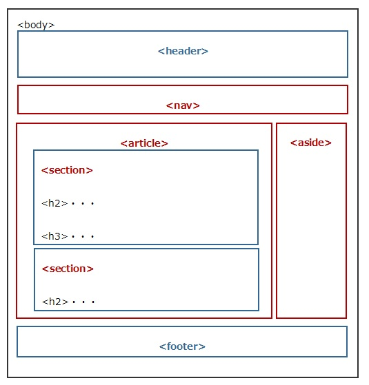

HTML5のWebサイト全体レイアウトのサンプル
List Sample。Levelを使うと横並びを調整できる
Levelを使うと横並びを調整できる
要素を並べてみる。container側にis-gaplessをつけないと子にpaddingが12px付くためはみ出してしまう。
要素左側
要素真ん中
要素右側
コメント形式のコンテンツ
Content Title
Contents~~ Contents~~ Contents~~ Contents~~ Contents~~ Contents~~
Sub Content Title
Contents~~ Contents~~ Contents~~ Contents~~ Contents~~ Contents~~